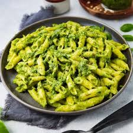

Pesto pasta

Homemade pesto is very quick and infinitely more delicious than store bought. This recipe
assumes you have a stick blender but you can use a pestle and mortar if you don't - though
you will need strong arms! It will serve four hungry people and makes great leftovers. We don't
usually add pine nuts as they are so expensive, but they are delicious if you have them. If you do,
add 50g to the pesto sauce ingreadients before blending.
Ingredients
- 90g bunch of basil
- 1 clove of garlic
- 8 tbsp extra vigin olive oil
- 70g finely grated parmesan or pecorino
- 400g dried penne
Steps
-
Add the penne to a large sauce pan of boiling water and set a timer for the amount of time the pasta
takes to cook according to its packet. Add a good shaking of salt to the pasta water.
-
While the pasta cooks, make the pesto. In the bowl for your stick blender, add the leaves from the basil,
garlic and olive oil. Blend until you have a smooth sauce then stir in the grated cheese.
-
Once the pasta has cooked, drain it, then stir in the pesto sauce. We prefer to leave the pasta at this point
to cool for 5 minutes or so and then serve it warm rather than hot, as this brings out the flavour of the
basil more. Add grated cheese to your liking. Enjoy!